The Display Manager is activated.
Operator control | Function |
|---|
 | Menu Tap on the menu to select the desired arrangement of the display areas. |
| 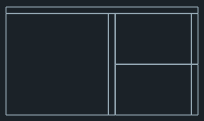 | 3-display areas |
| 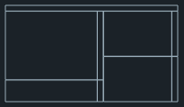 | 4-display areas SINUMERIK Operate (with function block) Widget area Applications area (PDF, virtual keyboard) Area with virtual keyboard
|
 | Mirroring display areas Mirrors the selected arrangement of the display areas. |
| 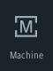 | Navigating in SINUMERIK Operate Tap on the corresponding icon to directly open the desired operating area. |
... |
| 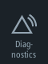 |
| 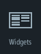 | Widgets The following widgets are available by default: Actual values Zero point Tool Axle load Alarms Program runtime Service life NC/PLC variables
|
 | PDF Opens the PDF stored here. The following functions are available in the PDF display: The pinch/zoom function and finger gestures are supported in the PDF view. Alternatively, use the PDF display via the animated toolbar. The following icons are available in full screen mode: Open document  Mark text in the document Mark text in the document
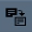 Copy contents  Change to entered page Change to entered page
Search for content  Rotate view to the left by 90 degrees Rotate view to the left by 90 degrees
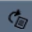 Rotate view to the right by 90 degrees 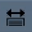 Adjust view to window width  Adjust view to window height Adjust view to window height
 Enlarge display Enlarge display
Reduce display  Show and hide bookmarks Show and hide bookmarks
You optimize the read view using the following finger gestures: If you change the language when viewing a PDF document, the PDF document is reloaded in the respective language. If no PDF document is available for the language set, the English PDF document is displayed. The position in the PDF document is retained beyond language switchover across sessions if the PDF document contains bookmarks. |
| 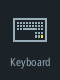 | | 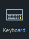 | Virtual keyboard Displays a QWERTY keyboard in the display area for applications as well as in the 4th display area below SINUMERIK Operate. If the virtual keyboard is selected while the display area is maximized, the keyboard opens as a pop-up. The keyboard can be moved on the display as required by means of touch operation. |
| | Camera Live streaming of the configured camera: If a camera has been configured, you can directly view the relevant streaming process. If a camera configuration is changed or an issue with connectivity occurs, reboot the system to activate the streaming process on the camera. |
| 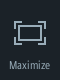 | Maximizing the display area Enlarges the area with SINUMERIK Operate and the area for the applications to the full dimensions of the Panel. |
| 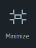 | Minimizing the display area The area with SINUMERIK Operate and the area for the applications are reduced back to their original size. |
| 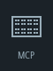 | Machine control panel Shows a machine control panel. Note:
Please observe the information provided by the machine manufacturer. |